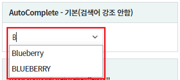
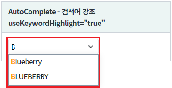
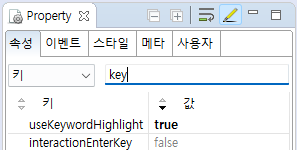
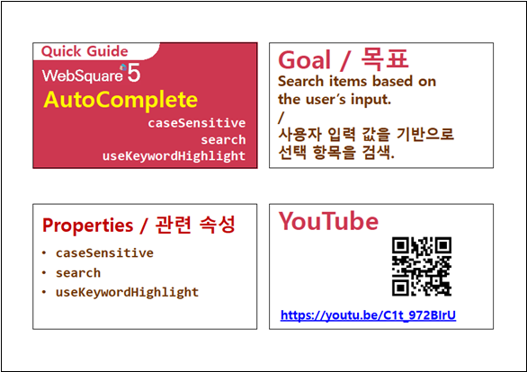

사용자가 입력한 검색어를 강조하는 기능인 useKeywordHighlight 속성 예제입니다.검색어 강조하지 않기(기본 설정)
검색어 강조하기
검색어를 "b" 또는 "B" 로 입력하여 출력된 목록의 검색어 강조를 비교합니다.
그림 1.브라우저(Chrome) 실행 예시 - 검색어 강조 안함

그림 2.브라우저(Chrome) 실행 예시 - 검색어 강조함

컴포넌트의 useKeywordHighlight 속성을 true로 정의합니다. 이 속성을 적용하지 않은 경우 기본값은 false(검색어 강조하지 않음)입니다.
그림 3.웹스퀘어5 SP5 스튜디오의 Property View(속성창) 예시

<!-- autoComplete의 소스 본문 예시 --> <w2:autoComplete useKeywordHighlight="true" > <!-- 중략 --> </w2:autoComplete>
useKeywordHighlight
[웹스퀘어5 SP5 개발 가이드] AutoComplete
링크 : https://docs1.inswave.com/sp5_user_guide/8df43d1f59fab704#135c147277dd42f3
[웹스퀘어5 SP5 개발 가이드] AutoComplete 검색
링크 : https://docs1.inswave.com/sp5_user_guide/8df43d1f59fab704#830f2f7e76fcfba6
AutoComplete 검색
링크 : https://youtu.be/C1t_972BIrU
